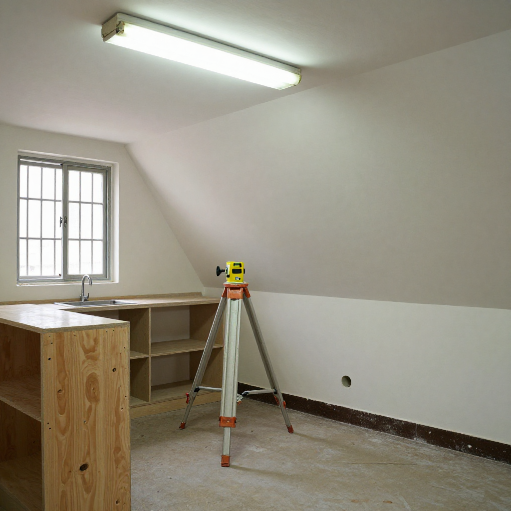
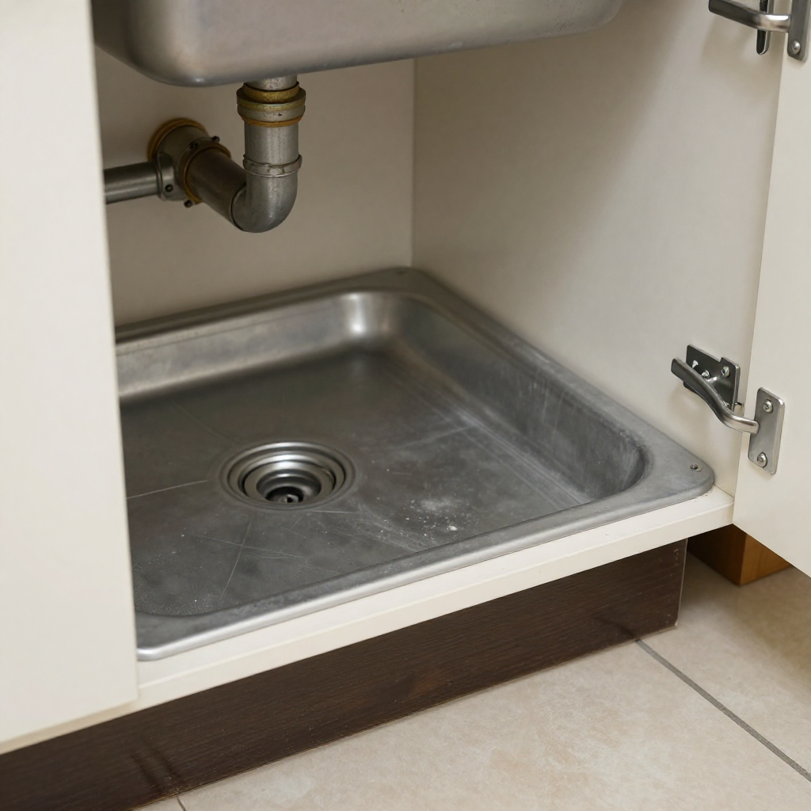
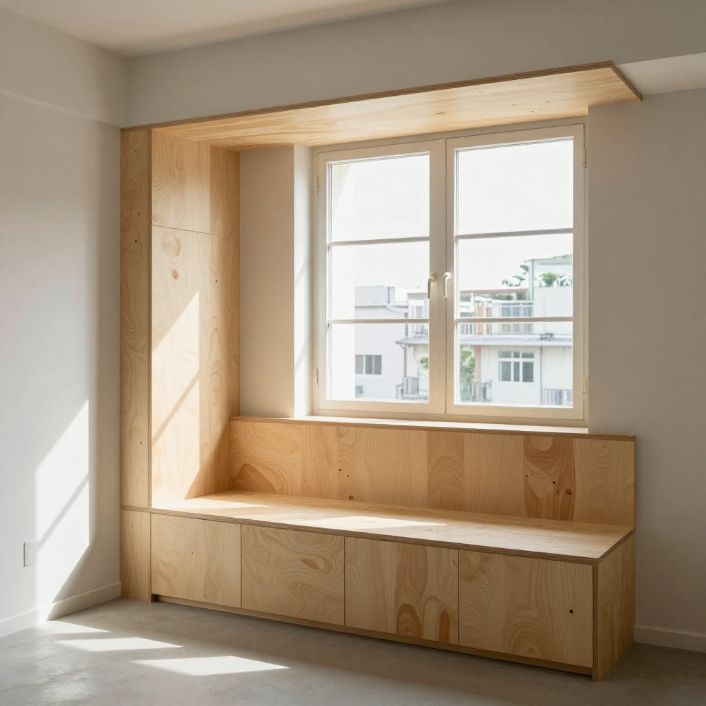

大坑舞火龍前嗰一晚

📍 場景：大坑勳德閣 600 呎唐樓｜主訪：大坑老行尊輝哥（林志輝）｜記錄：張丹楓、雲蕾｜日期：2026 年 9 月 21 日｜業主：陳太（化名）｜徒弟同行：阿俊｜WhatsApp 報價：852 5190 2328
序幕：舞火龍前嗰一晚
九月十九號，我同雲蕾搭港鐵去大坑。車廂入面人人低頭碌電話，我特登望一望窗外——大坑嗰邊已經開始掛燈籠，後晚就係農曆八月十五，中秋正日，亦係大坑舞火龍嘅最後一夜。
出閘之後行去浣紗街一間木行，輝哥已經喺度。佢五十八歲，大坑出身，做咗二十七年木工。早年跟佢老豆林伯喺大坑浣紮街、唐樓、勳德閣嗰帶做傢俬，後生嗰陣仲喺觀塘傢俬廠做咗十年板間師傅，練到一手睇圖就知點落料嘅本事。十年前老豆退休，佢就返嚟接咗條街嘅客——大坑、渣甸山、跑馬地、天后一帶，全係老街坊。
「輝哥，今晚收早啲啦，後天就係舞火龍，大坑街一帶成條街都打晒尖，條舖頭個客人都唔會上門。」一面刨緊木板，一面抬頭問。
輝哥低頭睇住個墨斗，唔出聲。
「我哋呢度做訂造傢俬，唔係做快餐。大坑街坊一早已經打過電話嚟，問我哋後晚舞火龍之前可唔可以趕起佢嗰組入牆鞋櫃。」
我哋三個望住條街，個個後生仔抬住一大扎香枝行過——佢哋準備去插「龍頭」嗰個竹棚。輝哥慢慢擺低個墨斗，講句：「走，陳太等緊。」

第一幕：陳太嘅 L 型廚櫃
輝哥行到個單位門口，拍兩下門。開門嗰位係陳太，住緊勳德閣一個六百幾呎嘅單位，三十幾年樓齡。
「輝哥，你睇吓我個廚房，我老公話想訂造一套 L 型廚櫃，但我哋個廚房牆身有少少傾斜，量呎嗰陣你同我老公講過話有兩厘米差距。咁樣訂造出嚟，啲櫃門會唔會閂唔實？」
輝哥笑一笑，蹲落去摸咗一下牆腳。
「陳太，你放心。我做咗大坑唐樓二十幾年，每一棟都有自己嘅脾氣。你間廚房呢個兩厘米差距，係因為當年落模嗰陣個地台本身就唔係完全水平——香港舊唐樓十棟有九棟都係咁。我哋做訂造唔係死跟圖紙睇，係要人眼跟住屋企一間屋睇。」
阿俊喺旁邊攞住個雷射水平儀。
「輝哥叫我帶埋呢個，用嚟喺現場再校一次。個櫃桶嘅頂板我哋會喺工場先開料，預留多三毫米嘅調整位，到現場裝嗰陣用呢個儀器校返水平，啲櫃門順住牆身斜度微微跟返，閂實冇問題。」
雲蕾喺記事簿寫低：「雷射水平儀 + 預留 3 毫米調整位——唐樓傾斜牆嘅標配。」
「咁個鋅盤下面嗰個櫃桶，如果放洗衣機落去，會唔會震到鬆郁？」
「會。所以我哋喺洗衣機嗰個櫃桶底板，加多一塊 18 厘夾板做承托，再喺四邊鑲咗一條 L 形嘅角鐵——呢個係我老豆嗰陣傳落嚟嘅做法。鋅盤底板要斜少少，等萬一漏水都會跟住斜度流出嚟，唔會積喺角位發霉。唐樓最怕就係廚房漏水落樓下，嗰陣就大鑊。」

第二幕：一戶一尺嘅飄窗櫈
陳太點點頭，又指住窗台。
「輝哥，呢個窗台我想訂造一張飄窗櫈，可以坐嗰種。但我哋唐樓嘅窗台闊度同高度，每一層都有少少唔同，你點樣處理？」
「唐樓嘅窗台，我哋叫佢做『一戶一尺』。我哋做訂造，唔似連鎖店咁出個 standard size 就當交貨。我每一張飄窗櫈落料之前，都要嚟現場度三次：第一次睇環境，第二次度細節，第三次淨係裝。我哋嗰陣叫做『三次到場』，係大坑嗰帶老木工嘅規矩。」
雲蕾即刻寫低：「一戶一尺、三次到場——呢啲唔係規矩，係功夫。」
輝哥補充：「第一次嚟，係睇嗰個窗台嘅光線、嗰陣時份嘅溫度、嗰層樓隔離嗰個單位嘅窗台高度——因為唐樓起樓反應一棟一個樣，唔係統一規格。第二次嚟，係度細節——闊度、高度、深度、牆角位有冇直角、落間有冇凹位、落窗有冇落水槽。第三次嚟，淨係裝——預埋嘅板件、預埋嘅五金、預埋嘅膠，一次過裝齊。」
「輝哥叫我帶個記事簿，三次到場要記三次低。每一次嘅闊度高度深度，連埋嗰日天氣都要記——落雨天度嘅呎，裝嗰日落雨就要再校返。」

第三幕：舞火龍前嘅最後一晚
收工嗰陣已經六點幾，大坑街一帶開始熱鬧起嚟。街坊開始喺門口掛氣球、搬摺枱。有幾個後生仔抬住一大扎香枝行過——佢哋準備去插「龍頭」嗰個竹棚。
阿俊望住條街，問輝哥：「輝哥，你細個嗰陣有冇去舞火龍？」
「有呀，我年年都去。我八歲嗰年，第一次跟老豆去浣紮街嗰邊睇火龍，當時仲要用手抽個大坑嗰個『坑』字首弄。大坑舞火龍有六百年，今年中秋後晚就係。我哋呢度做大坑街坊嘅生意，每一年舞火龍前後嗰兩日，條街都會封，所以我哋都會同客人講聲：『呢兩日唔好嚟度裝修喇，畀條龍過吓吓行嚟』。」
輝哥擺低個工具箱，望住條街。
「唐樓木工呢家功夫，唔係淨係識刨板、識裝嵌。係要識呢條街、呢個街坊、呢個節氣。你識嗰度個風土，你就識嗰度間屋嘅脾氣。你要得唔到呢度間屋嘅脾氣，你就做唔到嗰度間屋嘅訂造。」
阿俊點點頭，跟住輝哥收工。條街個燈剛剛亮起，幾個小朋友拎住紙紮嘅小燈籠由巷尾跑出嚟，差啲撞到佢哋。輝哥笑住閃一閃，講句『小心啲』，繼續行。
尾聲：唐樓木工嘅脾氣
雲蕾搭我膊頭：「丹楓，輝哥嗰句『要得唔到屋嘅脾氣，就做唔到訂造』——你記低。」
我喺記事簿寫低：「輝哥原話：『要得唔到屋嘅脾氣，就做唔到訂造。』」
我諗起我哋做訂造咗咁多年，觀塘、旺角、油塘、屯門、簡屋——每一個單位都有自己嘅脾氣。大坑唐樓嘅脾氣，係牆身傾斜、係窗台一戶一尺、係舞火龍前封街兩日。屯門簡屋嘅脾氣，係唔可以打實螺絲、係預埋十年後點拆。油塘老屋邨嘅脾氣，係批灰薄、係打實會鏽、係要寫清楚單據。
輝哥擺低工具箱嗰陣講嘅另一句：「唐樓木工呢家功夫，唔係淨係識刨板、識裝嵌——係要識呢條街、呢個街坊、呢個節氣。」
舞火龍前嗰一晚，我哋三個由勳德閣行返浣紮街。輝哥抬頭望住個月亮，話：「後晚就係中秋，舞火龍。我老豆嗰陣年年紮龍，今年到我紮——紮龍嘅料係珍珠草，珍珠草有水有風就硬，冇水冇風就軟。做人嚟一樣，你識嗰度個風土，你就識嗰度間屋嘅脾氣。」
雲蕾寫低：「輝哥最後一句：『識嗰度個風土，就識嗰度間屋嘅脾氣。』」
搭地鐵返屋企，我特登用八達通拍正價出閘。搭車要正價，訂造要實淨；舞火龍要識風土，裝修佬要識呢條街——呢啲唔係大道理，係細藝。
「要得唔到屋嘅脾氣，就做唔到訂造。」
——輝哥（林志輝）口述，張丹楓筆記，雲蕾整理，二〇二六年九月二十一日，大坑勳德閣工地
❓ 大坑唐樓三問
Q1：唐樓牆身傾斜，訂造廚櫃點處理？
唐樓牆身唔水平係常見現象，唔係單一單位問題，係成棟樓當年落模就唔完全水平。訂造時要預留 3 至 5 毫米調整位，配合雷射水平儀喺現場再校一次，櫃門順住牆身斜度微微跟返，照樣閂實。最忌就係死跟圖紙——圖紙上嘅 90 度直角，落咗現場係 88 度，櫃門就閂唔實。輝哥嗰代唐樓木工嘅規矩：人眼跟住屋企一間屋睇，唔係死跟圖紙。
Q2：唐樓廚房鋅盤底板同洗衣機底櫃點防水？
鋅盤底板要微微斜放，等萬一漏水都會跟住斜度流出嚟，唔會積喺角位發霉。洗衣機底櫃加 18 厘夾板做承托，再喺四邊鑲一條 L 形角鐵防震。唐樓最怕就係廚房漏水落樓下，嗰陣就大鑊——唔係賠錢咁簡單，係整棟樓嗰層樓業主都會受影響。輝哥老豆嗰陣傳落嚟嘅做法，每一塊底板都斜放，每一個角位都鑲角鐵。
Q3：唐樓飄窗「一戶一尺」係咩意思？點解要三次到場？
唐樓每層窗台嘅闊度、高度、深度都有少少唔同，唔似新型私人樓宇統一規格。輝哥嗰代木工嘅規矩係「三次到場」：第一次睇環境（光線、溫度、隔離單位窗台高度），第二次度細節（闊度、高度、深度、牆角位、窗台落水槽），第三次淨係裝（預埋板件、五金、膠一次過裝齊）。連鎖店出個 standard size 就當交貨嗰種做法，唐樓唔啱使。
本文配圖均為 AI 場景示意圖，僅供場景參考，並非真實工地照片或業主影像。
想知你個單位裝修要幾錢？
📱 一鍵 WhatsApp 張丹楓